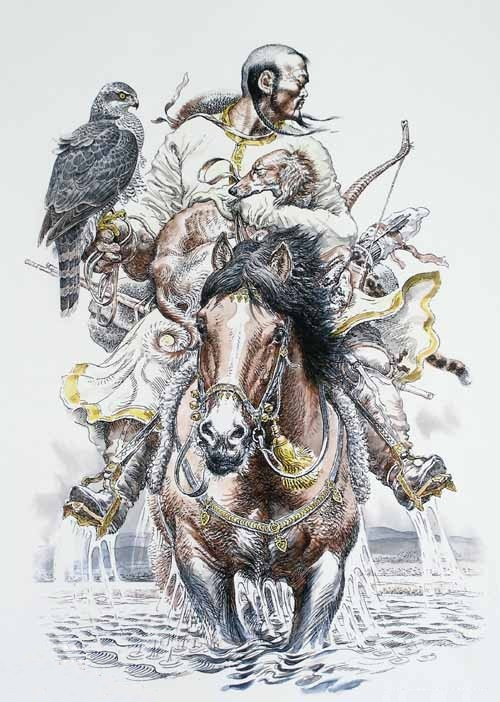

Dongchao Wen (温东超)
|  |
Professor of Engineering
https://dblp.org |
About me
I am a Senior Research Scientist at Canon Information Technology (Beijing) Co., Ltd., leading forward-looking research works on deep learning,
e.g. network architecture design, loss function design, model compression (e.g. low-bits), stochastic optimization methods, knowledge distillation,
AutoML(e.g. NAS), etc. I filed 40+ patents in CN, JP and US.
Before that, I received my M.S. from Beihang University (2005) and my B.S. degree from Beihang University (2002), respectively.
News
Face Recognition: My team achieved Rank 02th in the world in NIST FRVT 1:N Investigation contest On Nov.5th, 2020. (Team name: cib-000, 1st submission)
Face Recognition: My team achieved Rank 08th in the world in NIST FRVT 1:N Identification contest On Nov.5th, 2020. (Team name: cib-000, 1st submission)
Face Recognition: My team achieved Rank 04th in the world in NIST FRVT 1:1 contest On Aug.5th, 2020. (Team name: cib-001, 2nd submission)
Face Recognition: My team achieved Rank 25th in the world in NIST FRVT 1:1 contest On Dec.12th, 2019.(Team name: cib-000, 1st submission)
NIST FRVT
Activities
- The Embedded Vision Workshop
 |
Program Committee member |
Publications
In 2020
Fully Supervised and Guided Distillation for One-Stage Detectors
Deyu Wang, Dongchao Wen *, Junjie Liu, Wei Tao, Tse-Wei Chen, Kinya Osa, Masami Kato
Asian Conference on Computer Vision (ACCV) 2020
Hardware Architecture of Embedded Inference Accelerator and Analysis of Algorithms for Depthwise and Large-Kernel Convolutions
Tse-Wei Chen, Wei Tao, Deyu Wang, Dongchao Wen, Masami Kato, Kinya Osa
European Conference on Computer Vision Workshops (ECCVW) 2020 (Oral)
QuantNet: Learning to Quantize by Learning within Fully Differentiable Framework
Junjie Liu, Dongchao Wen, Deyu Wang, Wei Tao, Tse-Wei Chen, Kinya Osa, Masami Kato
European Conference on Computer Vision Workshops (ECCVW) 2020 (Oral)
-
BAMSProd: A Step towards Generalizing the Adaptive Optimization Methods to Deep Binary Model
Junjie Liu, Dongchao Wen, Deyu Wang, Wei Tao, Tse-Wei Chen, Kinya Osa, Masami Kato
IEEE/CVF Conference on Computer Vision and Pattern Recognition Workshops (CVPRW) 2020 (Oral)
In 2019
Condensation-Net: Memory-Efficient Network Architecture With Cross-Channel Pooling Layers and Virtual Feature Maps
Tse-Wei Chen, Motoki Yoshinaga, Hongxing Gao, Wei Tao, Dongchao Wen, Junjie Liu, Kinya Osa, Masami Kato
IEEE/CVF Conference on Computer Vision and Pattern Recognition Workshops (CVPRW) 2019
DupNet: Towards Very Tiny Quantized CNN With Improved Accuracy for Face Detection
Hongxing Gao, Wei Tao, Dongchao Wen, Junjie Liu, Tse-Wei Chen, Kinya Osa, Masami Kato
IEEE/CVF Conference on Computer Vision and Pattern Recognition Workshops (CVPRW) 2019
-
Knowledge Representing: Efficient, Sparse Representation of Prior Knowledge for Knowledge Distillation
Junjie Liu, Dongchao Wen, Hongxing Gao, Wei Tao, Tse-Wei Chen, Kinya Osa, Masami Kato
IEEE/CVF Conference on Computer Vision and Pattern Recognition Workshops (CVPRW) 2019
In 2018
IFQ-Net: Integrated Fixed-Point Quantization Networks for Embedded Vision
Hongxing Gao, Wei Tao, Dongchao Wen, Tse-Wei Chen, Kinya Osa, Masami Kato
IEEE/CVF Conference on Computer Vision and Pattern Recognition Workshops (CVPRW) 2018 (Oral)
University Collaboration (Principal Investigator)
-
Global-Local GCN: Large-Scale Label Noise Cleansing for Face Recognition
Yaobing Zhang, Weihong Deng, Mei Wang, Jiani Hu, Xian Li, Dongyue Zhao, Dongchao Wen
IEEE/CVF Conference on Computer Vision and Pattern Recognition (CVPR) 2020
Honors and Awards
2019年度优秀专利提案奖, 佳能集团, 2020 年 7 月
2019年度优秀技术成果奖, 佳能信息技术(北京)有限公司, 2020 年 1 月
2018年A 级专利奖, 佳能信息技术(北京)有限公司, 2019 年 1 月
2018年优秀专利团队奖, 佳能信息技术(北京)有限公司, 2019 年 1 月
2017年优秀专利团队奖, 佳能信息技术(北京)有限公司, 2018 年 1 月
2015年优秀专利团队奖, 佳能信息技术(北京)有限公司, 2016 年 1 月
2007年优秀员工, 佳能信息技术(北京)有限公司, 2008 年 1 月
2007年A 级专利奖, 佳能信息技术(北京)有限公司, 2008 年 1 月
佳能信息技术(北京)有限公司
611奖学金, 颁发机构 北京航空航天大学,获奖日期 2004 年
光华奖学金, 颁发机构 北京航空航天大学,获奖日期 2003 年
人民奖学金, 颁发机构 北京航空航天大学,获奖日期 1999 年
大学阶段
内蒙古自治区三好学生, 获奖日期 1997 年
内蒙古自治区三好学生, 获奖日期 1996 年
高中阶段
Service
Reviewer for CVPR’18 EVW Workshop, CVPR’19 EVW Workshop , ECCV’20 EVW Workshop